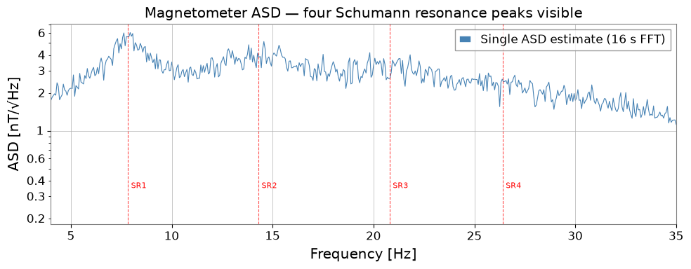
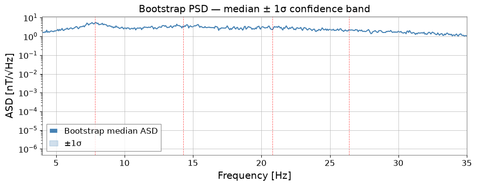
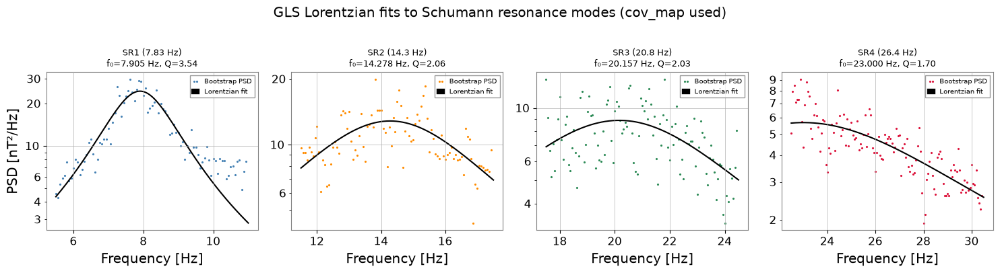
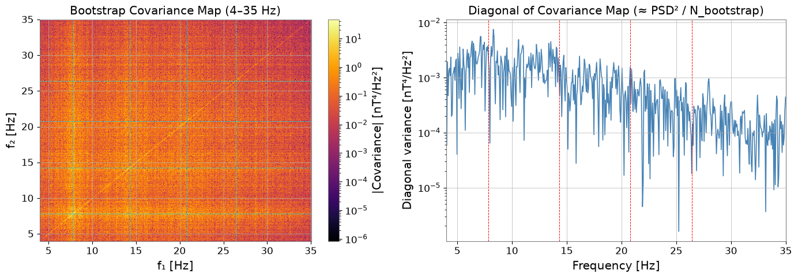
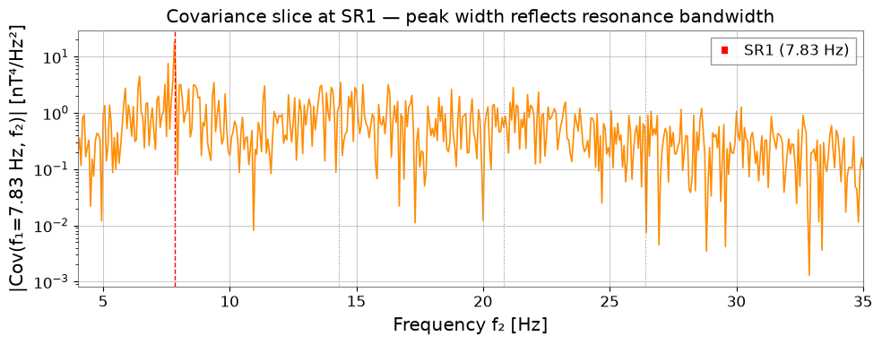

ケーススタディ: シューマン共鳴解析#
シューマン共振 は、地球と電離層のキャビティ内で落雷放電によって励起されるグローバルな電磁共振です。約 7.83、14.3、20.8、26.4 Hz に鋭いスペクトルピークとして現れ、これは KAGRA のような第 2 世代重力波検出器の感度帯域のまさに内側に位置します。
このノートブックでは、gwexpy を用いたエンドツーエンドの特徴づけワークフローを示します：
ブートストラップ PSD（
bootstrap_spectrogram）— 非対称な信頼区間を持つ頑健なスペクトル推定ローレンツ Q 値フィット（
fit_series+lorentzian_q）— 各モードの共振周波数・Q 値・振幅を測定共分散構造（
BifrequencyMap）— ブートストラップが返すビン間相関を可視化。GLS フィッティングで自動的に使用されます時間追跡 — 観測区間にわたってモード振幅を監視
物理的な問いは、観測された ELF ピークが、局所的な磁気汚染やフィッティングのアーティファクトではなく、共有された狭帯域構造と相関した振幅変化を伴うグローバルな磁気共振として振る舞うかどうかです。
準備#
import warnings
warnings.filterwarnings("ignore", category=UserWarning)
warnings.filterwarnings("ignore", category=DeprecationWarning)
# ruff: noqa: I001
import matplotlib.pyplot as plt
import numpy as np
from astropy import units as u
from gwexpy.fitting import fit_series
from gwexpy.fitting.models import lorentzian_q
from gwexpy.frequencyseries import BifrequencyMap # noqa: F401 (shown for clarity)
from gwexpy.spectral import bootstrap_spectrogram
from gwexpy.timeseries import TimeSeries
1. モックデータ: シューマン共鳴を含む磁力計データ#
地球の背景電磁場を測定する 1 軸磁力計 (ELF 帯) をシミュレートします。 4 つのシューマン共鳴を ローレンツ型スペクトル形状の狭帯域ノイズ として生成し、 広帯域ノイズフロアに重ね合わせます。
モード |
周波数 |
Q 値 |
ピーク ASD |
|---|---|---|---|
SR1 |
7.83 Hz |
5.0 |
4.0 nT/√Hz |
SR2 |
14.3 Hz |
4.5 |
2.5 nT/√Hz |
SR3 |
20.8 Hz |
4.0 |
1.5 nT/√Hz |
SR4 |
26.4 Hz |
3.5 |
1.0 nT/√Hz |
よくある誤り: 低周波のピークをすべてシューマン構造として扱うこと。局所的な磁気ラインや人為的なコム状ノイズも同じ帯域に存在しうるため、後続の節では周波数だけでなく、線幅・共分散・時間的コヒーレンスに着目します。
rng = np.random.default_rng(42)
fs = 512 # sample rate [Hz]
T = 300.0 # duration [s]
n = int(fs * T)
# Schumann resonance parameters (Earth-ionosphere cavity modes)
SR_FREQS = [7.83, 14.3, 20.8, 26.4] # Hz — first 4 modes
SR_Q = [5.0, 4.5, 4.0, 3.5] # quality factors
SR_AMP = [4.0, 2.5, 1.5, 1.0] # peak ASD [nT/√Hz]
NOISE_FLOOR = 0.3 # broadband floor [nT/√Hz]
# ── Frequency-domain synthesis ──────────────────────────────────────────────
f = np.fft.rfftfreq(n, d=1.0 / fs) # one-sided frequency axis [Hz]
# Build target ASD [nT/√Hz] as sum of Lorentzians + floor
asd_target = np.full_like(f, NOISE_FLOOR)
for f0, q, A in zip(SR_FREQS, SR_Q, SR_AMP):
gamma = f0 / (2.0 * q) # half-width at half-maximum [Hz]
asd_target += A * gamma / np.sqrt((f - f0) ** 2 + gamma ** 2)
# Convert ASD to rfft amplitudes so that Welch PSD ≈ asd_target²
# For one-sided PSD: S(f) = 2·|X[k]|² / (N·fs) ⟹ |X[k]| = asd·√(N·fs/2)
amp = asd_target * np.sqrt(n * fs / 2.0)
amp[0] = 0.0 # zero DC component
Z = (rng.standard_normal(len(f)) + 1j * rng.standard_normal(len(f))) / np.sqrt(2)
x = np.fft.irfft(amp * Z, n=n)
mag = TimeSeries(x, dt=1.0 / fs, unit=u.nT,
name="K1:PEM-MAG_EXV_EAST_X_DQ", t0=0)
print(f"Duration: {T:.0f} s | fs: {fs} Hz | N: {n:,}")
Duration: 300 s | fs: 512 Hz | N: 153,600
# Quick-look ASD — verify Schumann peaks are present
fig, ax = plt.subplots(figsize=(10, 4))
asd_raw = mag.asd(fftlength=16.0, overlap=8.0)
ax.semilogy(asd_raw.frequencies.value, asd_raw.value, lw=0.8,
color='steelblue', label='Single ASD estimate (16 s FFT)')
for f0, lab in zip(SR_FREQS, ['SR1', 'SR2', 'SR3', 'SR4']):
ax.axvline(f0, color='red', ls='--', lw=0.8, alpha=0.7)
ax.text(f0 + 0.15, 0.35, lab, color='red', fontsize=8)
ax.set_xlim(4, 35)
ax.set_xlabel('Frequency [Hz]')
ax.set_ylabel('ASD [nT/√Hz]')
ax.set_title('Magnetometer ASD — four Schumann resonance peaks visible')
ax.legend()
plt.tight_layout()
plt.show()

2. ブートストラップ PSD 推定#
bootstrap_spectrogram はスペクトログラムの時間カラムをリサンプリングし、 ロバストな PSD 推定値 (中央値または平均値) と非対称信頼区間を提供します。 return_map=True にすると、周波数ビン間の相関を定量化する 共分散 BifrequencyMap cov_map(f1, f2) も返します。これは次のステップの GLS フィットに使用されます。
失敗しやすいパターン: ブートストラップを誤差棒のためだけに使い、対角成分のみの不確かさでフィットすること。狭帯域の磁場データでは、ビン間共分散は信号モデルの一部であり、省略可能な飾りではありません。
# Compute spectrogram: 16 s FFT segments, 50 % Hann-window overlap
spec = mag.spectrogram2(fftlength=16.0, overlap=8.0, window='hann')
print(f"Spectrogram shape: {spec.shape} (n_times × n_freqs)")
# Bootstrap resampling — returns (PSD, covariance BifrequencyMap)
psd_boot, cov_map = bootstrap_spectrogram(
spec,
n_boot=500,
method='median',
ci=0.68,
fftlength=16.0,
overlap=8.0,
return_map=True,
ignore_nan=True,
)
print(f"Bootstrap PSD shape : {psd_boot.shape}")
print(f"Covariance map shape: {cov_map.shape} ← BifrequencyMap(f1, f2)")
Spectrogram shape: (37, 4097) (n_times × n_freqs)
Bootstrap PSD shape : (4097,)
Covariance map shape: (4097, 4097) ← BifrequencyMap(f1, f2)
# Plot bootstrap PSD with 1-σ confidence band derived from cov_map diagonal
fig, ax = plt.subplots(figsize=(10, 4))
f_psd = psd_boot.frequencies.value
y_psd = psd_boot.value
# Diagonal of covariance = variance per frequency bin
diag = cov_map.diagonal(method='mean')
y_var = np.interp(f_psd, diag.frequencies.value, np.abs(diag.value))
y_lo = np.sqrt(np.maximum(y_psd - np.sqrt(y_var), 1e-12))
y_hi = np.sqrt(y_psd + np.sqrt(y_var))
ax.semilogy(f_psd, np.sqrt(y_psd), lw=1.5, color='steelblue',
label='Bootstrap median ASD')
ax.fill_between(f_psd, y_lo, y_hi, alpha=0.25, color='steelblue', label='±1σ')
for f0 in SR_FREQS:
ax.axvline(f0, color='red', ls='--', lw=0.7, alpha=0.6)
ax.set_xlim(4, 35)
ax.set_xlabel('Frequency [Hz]')
ax.set_ylabel('ASD [nT/√Hz]')
ax.set_title('Bootstrap PSD — median ± 1σ confidence band')
ax.legend()
plt.tight_layout()
plt.show()

3. ローレンツ Q ファクターフィット#
各シューマンモードを Q ファクター型ローレンツ分布 でモデル化します:
fit_series に cov=cov_map を渡すことで、オーバーラップ FFT セグメント間の 相関を考慮した 一般化最小二乗法 (GLS) でフィットを行い、正しいパラメータ誤差が得られます。
よくある誤り: フィット窓に複数の重なり合うピークや強い局所ベースライン勾配が含まれるときに、フィットされた Q を過大解釈すること。良い Q 推定には、支配的なモードが 1 つであることと、PSD 推定量に整合する不確かさモデルが必要です。
# Fit each Schumann mode independently in a dedicated frequency window
fit_ranges = [(6.0, 10.5), (11.5, 17.5), (17.5, 24.5), (23.0, 30.5)]
fit_results = []
for i, (f0, q0, A0, (flo, fhi)) in enumerate(
zip(SR_FREQS, SR_Q, SR_AMP, fit_ranges)):
result = fit_series(
psd_boot,
lorentzian_q,
x_range=(flo, fhi),
p0={'A': A0 ** 2, 'x0': f0, 'Q': q0},
limits={'A': (0, 500), 'x0': (flo, fhi), 'Q': (1.0, 100.0)},
)
fit_results.append(result)
p, e = result.params, result.errors
print(
f"SR{i + 1}: f0 = {p['x0']:.3f} ± {e['x0']:.3f} Hz |"
f" Q = {p['Q']:.2f} ± {e['Q']:.2f} |"
f" A = {p['A']:.4f} ± {e['A']:.4f} nT²/Hz"
)
SR1: f0 = 7.905 ± 0.012 Hz | Q = 3.54 ± 0.07 | A = 24.5448 ± 0.2853 nT²/Hz
SR2: f0 = 14.278 ± 0.053 Hz | Q = 2.06 ± 0.08 | A = 12.8592 ± 0.1814 nT²/Hz
SR3: f0 = 20.157 ± 0.125 Hz | Q = 2.03 ± 0.14 | A = 8.8965 ± 0.1565 nT²/Hz
SR4: f0 = 23.000 ± 0.338 Hz | Q = 1.70 ± 0.11 | A = 5.6880 ± 0.1716 nT²/Hz
# Plot fitted Lorentzians over the bootstrap PSD
fig, axes = plt.subplots(1, 4, figsize=(15, 4))
colors = ['steelblue', 'darkorange', 'seagreen', 'crimson']
plot_ranges = [(5.5, 11.0), (11.5, 17.5), (17.5, 24.5), (22.5, 30.5)]
labels = ['SR1 (7.83 Hz)', 'SR2 (14.3 Hz)', 'SR3 (20.8 Hz)', 'SR4 (26.4 Hz)']
for ax, result, fr, color, label in zip(axes, fit_results, plot_ranges, colors, labels):
psd_crop = psd_boot.crop(*fr)
f_crop = psd_crop.frequencies.value
y_crop = psd_crop.value
ax.semilogy(f_crop, y_crop, '.', color=color, ms=2.5, label='Bootstrap PSD')
f_fine = np.linspace(*fr, 300)
ax.semilogy(f_fine, lorentzian_q(f_fine, **result.params),
'k-', lw=1.5, label='Lorentzian fit')
p = result.params
ax.set_title(f"{label}\nf₀={p['x0']:.3f} Hz, Q={p['Q']:.2f}", fontsize=9)
ax.set_xlabel('Frequency [Hz]')
ax.legend(fontsize=7)
axes[0].set_ylabel('PSD [nT²/Hz]')
plt.suptitle('GLS Lorentzian fits to Schumann resonance modes (cov_map used)', y=1.01)
plt.tight_layout()
plt.show()

4. BifrequencyMap による共分散構造の解析#
bootstrap_spectrogram が返すブートストラップ共分散マップ cov_map(f1, f2) は、異なる周波数のスペクトル推定値がどれだけ強く相関しているか を表します。狭帯域共振を持つ磁力計データでは、次が期待されます：
各共振周波数での 対角に沿った高い共分散（
f1 ≈ f2）→ 隣接ビンは重なり合う FFT 窓に由来する相関ノイズを共有します。共振付近の 非対角構造 → ピークが 1 ビンを超えて広がります。
ここで使用する BifrequencyMap のメソッド：
.diagonal(method='mean')— 分散プロファイル（行列の対角）を返します.get_slice(at=f0, axis='f1')— f1 を固定した 1 次元の共分散スライスを返します
対角から離れた領域でマップがほとんど構造を持たない場合、それはしばしば、選んだ FFT や平均化の設定が、測定しようとしている共振の物理を分解するには粗すぎることのヒントになります。
from matplotlib.colors import LogNorm
fig, axes = plt.subplots(1, 2, figsize=(14, 5))
# ── Left: 2-D covariance map (4–35 Hz sub-region) ─────────────────────────
f_lo, f_hi = 4.0, 35.0
f_vals = cov_map.frequency1.value
mask = (f_vals >= f_lo) & (f_vals <= f_hi)
cov_sub = np.abs(cov_map.value[np.ix_(mask, mask)])
f_sub = f_vals[mask]
im = axes[0].pcolormesh(f_sub, f_sub, cov_sub,
norm=LogNorm(vmin=cov_sub[cov_sub > 0].min(), vmax=cov_sub.max()),
cmap='inferno', shading='auto')
fig.colorbar(im, ax=axes[0], label='|Covariance| [nT⁴/Hz²]')
for f0 in SR_FREQS:
axes[0].axvline(f0, color='cyan', lw=0.6, ls='--')
axes[0].axhline(f0, color='cyan', lw=0.6, ls='--')
axes[0].set_xlabel('f₁ [Hz]')
axes[0].set_ylabel('f₂ [Hz]')
axes[0].set_title('Bootstrap Covariance Map (4–35 Hz)')
# ── Right: diagonal = variance per bin ────────────────────────────────────
diag = cov_map.diagonal(method='mean')
f_d = diag.frequencies.value
m_d = (f_d >= f_lo) & (f_d <= f_hi)
axes[1].semilogy(f_d[m_d], np.abs(diag.value[m_d]), lw=1.2, color='steelblue')
for f0 in SR_FREQS:
axes[1].axvline(f0, color='red', ls='--', lw=0.7)
axes[1].set_xlim(f_lo, f_hi)
axes[1].set_xlabel('Frequency [Hz]')
axes[1].set_ylabel('Diagonal variance [nT⁴/Hz²]')
axes[1].set_title('Diagonal of Covariance Map (≈ PSD² / N_bootstrap)')
plt.tight_layout()
plt.show()

# Covariance slice at SR1 (7.83 Hz) — shows spectral width of the resonance
cov_slice = cov_map.get_slice(at=7.83, axis='f1')
f_sl = cov_slice.frequencies.value
m_sl = (f_sl >= f_lo) & (f_sl <= f_hi)
fig, ax = plt.subplots(figsize=(10, 4))
ax.semilogy(f_sl[m_sl], np.abs(cov_slice.value[m_sl]), lw=1.2, color='darkorange')
ax.axvline(7.83, color='red', ls='--', lw=1, label='SR1 (7.83 Hz)')
for f0 in SR_FREQS[1:]:
ax.axvline(f0, color='gray', ls=':', lw=0.7)
ax.set_xlim(f_lo, f_hi)
ax.set_xlabel('Frequency f₂ [Hz]')
ax.set_ylabel('|Cov(f₁=7.83 Hz, f₂)| [nT⁴/Hz²]')
ax.set_title('Covariance slice at SR1 — peak width reflects resonance bandwidth')
ax.legend()
plt.tight_layout()
plt.show()

5. 振幅の時間追跡#
シューマン共鳴の振幅は世界的な落雷活動に応じて変動します (日変化・季節変化)。 スペクトログラムから各モード周辺の帯域内平均パワーを抽出し、 ASD 時系列に変換して時間変化を監視します。
注意すべき失敗モード: 帯域平均が広すぎると隣接モードや局所擾乱が混ざり、狭すぎるとビン間のジッタに敏感になります。観測区間全体で 1 つの共振系列を追える窓を選んでください。
fig, ax = plt.subplots(figsize=(10, 4))
times_s = spec.times.value
colors_t = ['steelblue', 'darkorange', 'seagreen', 'crimson']
for f0, color, label in zip(SR_FREQS, colors_t,
['SR1 7.83 Hz', 'SR2 14.3 Hz',
'SR3 20.8 Hz', 'SR4 26.4 Hz']):
# Narrow-band power (±0.5 Hz window around each mode)
spec_band = spec.crop_frequencies(f0 - 0.5, f0 + 0.5)
amp_t = np.sqrt(spec_band.value.mean(axis=1))
ax.plot(times_s, amp_t, lw=0.8, color=color, label=label)
ax.set_xlabel('Time [s]')
ax.set_ylabel('Mean ASD in ±0.5 Hz band [nT/√Hz]')
ax.set_title('Schumann resonance amplitude evolution (300 s mock observation)')
ax.legend(ncol=2, fontsize=9)
plt.tight_layout()
plt.show()

まとめ#
ステップ |
ツール |
返り値 |
|---|---|---|
ロバスト PSD |
|
中央値 PSD + 1σ 帯 |
不確かさモデル |
|
周波数ビン間共分散行列 |
ピーク特性評価 |
|
各モードの f₀、Q、振幅 |
時間監視 |
|
振幅時系列 |
重要なポイント#
ブートストラップ再サンプリング は、単一セグメント推定がノイジーになる狭帯域スペクトルピークに対して、信頼できる不確かさ推定を与えます。
BifrequencyMap の共分散 は適切な GLS フィッティングに不可欠です。
fit_seriesにcov=cov_mapを渡すと、ビン間相関が自動的に考慮されます。lorentzian_qのパラメータ化は、各シューマンモードの物理的に意味のある Q 値 を直接与えます。このワークフローは実際の KAGRA PEM 磁力計データにそのまま適用できます。
信頼できる同定には、既知の周波数に合うことだけでなく、幅・共分散構造・時間発展を合わせて見ることが重要です。
次のステップ#
実データの読み込み:
TimeSeries.read('K1:PEM-MAG_EXV_EAST_X_DQ', start, end)。BifrequencyMap.propagate()で多チャンネルのシューマンコヒーレンスを計算し、DARM ノイズへの磁気カップリング寄与を推定します。GPS 時刻セグメントをループして、日次・季節変動を追跡します。